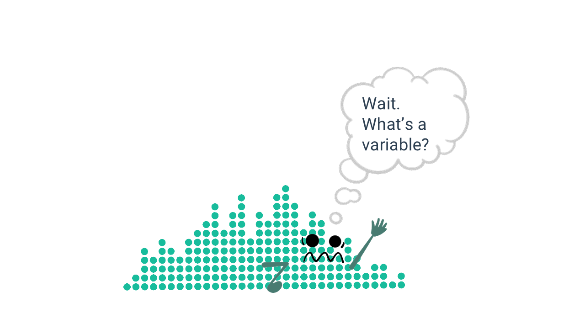

Basic Statistical Terminology

LEARNING OBJECTIVES
- Be familiar with basic terms of quantitative data analysis
- Calculate proportions and percentages
- Construct and analyze frequency, percentage, and cumulative distributions
READINGS
Readings are available on Quercus.
- Wheelan, Charles. 2014. “Descriptive Statistics: Who Was the Best Baseball Player of All Time?” Pp. 15–35 in Naked Statistics: Stripping the Dread from the Data. New York: W. W. Norton & Company.
TERMS
|
|
Statistics Vocabulary
I’m interested in sociology. Why do I have to learn about statistics?
Students often arrive in statistics classes wondering why they are required to take this class. Watch this video for a summary of how sociologists do sociology and how statistics fits into the bigger picture [~10 minutes].
Before we can analyze data, we need to identify the unit of analysis: who or what is being studied. The unit of analysis can be people, institutions, groups, things, countries, states, and so on.
Rarely do scientists have the time to study an entire population of interest, so we usually take a sample.
POPULATION
All units of analysis (people, institutions, groups, etc.) in which the researcher is interested.
SAMPLE
A subset of people (or institutions, groups, etc.) selected from a population.
A note on notation:
N refers to population size
n refers to sample size
Heads Up!
The capitalization of the symbols/notations in statistics are meaningful.
Capital letters are typically used when describing a population. Lowercase letters are often used when describing a sample.

Descriptive vs. Inferential Statistics
In this course, you will learn about descriptive and inferential statistics. There are two types of statistics:
DESCRIPTIVE STATISTICS
Procedures that help us organize and describe data collected from a sample or population.
INFERENTIAL STATISTICS
Making underlying predictions or inferences about a population using observations and analyses from a sample.
Watch this short video for a more detailed explanation of the difference between the two [3 minutes].
We will focus on descriptive statistics the first few weeks of the course, before moving on to inferential statistics.
Indicate whether the following uses descriptive or inferential statistics
Tidy Data
Quantitative researchers commonly analyze data stored in tables, where data is recorded in a combination of rows and columns (think spreadsheets).
Tidy data is a specific way of organizing data into a consistent format (how the data is organized in rows and columns).
Tidy data files contain one line for each observation, such as a record or person (also called a “respondent”). Each column generally represents a single variable.

VARIABLES
Any factor, trait, or condition that can exist in differing amounts or types.
Variables are attributes that describe a person, place, thing, or idea that we can then measure. They can be thought of as characteristics that vary.
Variables must be mutually exclusive (classify every observation) and exhaustive (one category for each observation).
There are three rules that make a dataset tidy:
- Each variable must have its own column.
- Each observation must have its own row.
- Each value must have its own cell.

To conduct statistical analyses, we need to know the scale of measurement for a variable. There are different ways that variables can be measured.
Consider how we might measure happiness in a survey.
People could tell us they either are happy or they are not happy. They could tell us how happy they are, such as very unhappy, somewhat unhappy, somewhat happy, or very happy. We could ask people to rate their happiness on a scale from 1-10, with 1 being not at all happy and 10 being ecstatic! Or, we could ask people to tell us what emotion they most felt throughout the day (e.g., happy, sad, content, joyful, anxious, and so on).
These options are all different levels of measurement.
Measurement Levels
Watch this short video explaining the different types of data that scientists collect [~6 minutes].
Terms
DICHOTOMOUS (aka binary) A variable with only two categories.
NOMINAL
A variable made up of categories that cannot be ordered according to
rank.
ORDINAL A variable made up of ranked categories, but there is no systematic and measurable numeric difference between the categories.
INTERVAL-RATIO A variable with categories that are rank-ordered and expressed in the same units.
Transforming Variables
One kind of variable can be transformed into another kind of variable. Properties that can be measured at a more precise level can also be measured at a less precise level, but not vice versa.
Example:
Years of education, an interval variable, can be dichotomized into “high
school graduate” vs. “not a graduate.”

Identify the following as nominal level, ordinal level, or interval-ratio level data.
Frequency Distributions
Once we’ve collected the data from a sample, we evaluate the responses. Are all the responses alike? Did people pick one answer category more than others? Are lots of people middle class or are some people very poor and some people really rich?
To answer these questions, researchers analyze the distribution of the data.
DISTRIBUTION:
Shows all the possible values (or intervals) of the data and how often they occur.
FREQUENCY DISTRIBUTION
A table reporting the number of observations falling into each category of the variable.

Distribution Tables
A common first step in data analysis is to create a table showing the number of observations for each value of a variable. This is called a frequency table. It consists of two columns.
The first column includes the variable and the response categories.
The second column reports the number of cases in each category, as well as the total number of cases (i.e., sum of all frequencies).
Table 1. Attitudes about sex before marriage
premarsx | n |
|---|---|
always wrong | 357 |
almost always wrong | 122 |
wrong only sometimes | 258 |
not wrong at all | 1,378 |
Total | 2,115 |
Source: U.S. General Social Survey, 2024
Survey question: There’s been a lot of discussion about the way morals and attitudes about sex are changing in this country. If a man and woman have sex relations before marriage, do you think it is _________.
Learning Check 02
Please answer the following questions to verify you understand the topics in this module.